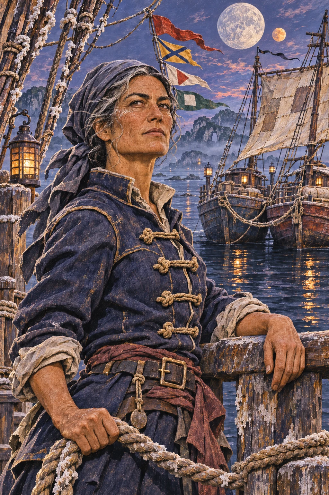

Вывести «Полную Чашу» с сорока жителями Чаши из-под ареста и из гавани Узла до рассвета.

Евдокия ВешФилат ОбручОльгер Тален
Сумерки над Портом Узел пахнут солью и смолой. «Складень» стоит у борта «Полной Чаши» в связке. На её палубе сорок человек с Чаши сидят на узлах. По пирсу идут четверо в траурных лентах флотилии; старший несёт на шнуре свинцовые пломбы. «По приказу адмирала Галса от третьего дня Сельдяного месяца. Судно с людьми Чаши — под пломбу до уплаты». Свинец щёлкает на носовом швартове. Над рейдом зажигают дозорные огни. Евдокия Веш, не оборачиваясь: «Вода полная. До полуночи она наша. Потом — нет».
Подготовка и роли
Тревога блокады. Раздатка «Тревога блокады» на столе: шкала 0–10, старт 2 (арест был при свидетелях). Ведущий при каждом движении называет число и причину. Поднимают: замеченный парус +1 (флотилия увидела и узнала судно экипажа; не больше +1 за сцену); огонь ночью +1 (открытый огонь экипажа виден с воды; шторный фонарь Василисы не считается; не больше +1 за сцену); выстрел +1 (каждый бой с людьми флотилии; бой с рифовым народом — нет); отпущенный пленный +1 (группа флотилии, которая вернётся к своим до прорыва; высаженные на Чаше под присмотр — нет); сорванная пломба +1 (сегодня их три: носовой швартов, кормовой, люк трюма); колокол или сигнальный огонь +2 сверх выстрела того же боя (бой на пирсе с колоколом — +3); журнал отдан Инне +1 (вечер 6). Снимают: чужой флаг −1 (прошли на виду у дозора под не своим флагом и не узнаны); туман −1 (вечера 2 и 7, если шли в тумане); тихий проход −1 (Сухой рукав, Кошачий лаз, задний проток Ряда, боковой вход в Горло — и никто не видел); белый прилив −1 (вечер 4 ночью, вечер 8 перед прорывом). Предел: за вечер — не больше одного общего «−1» (чужой флаг или тихий проход); туман и белый прилив — «−1» самого вечера, сверх него. Других движений нет. Полосу смотрят в начале каждой сцены; полоса включает всё, что ниже. 0–2 «Спят флаги» — по дозору на проход. 3–4 «Двойной дозор» — катера парами; в сцене 2 вечеров 2–7 проверка дозора (Скрытность группой СЛ 12 или путь без броска; провал — парус +1). 5–6 «Цепь» — проверки тихого прохода СЛ 14, Ряд обыскивают. 7–8 «Флагман на охоте» — в конце сцены 3 его огни: жгли огонь или днём шли под парусом на виду — парус +1. 9–10 «Коридор захлопнут» — любой ход под парусом днём сам даёт парус +1 (раз за сцену). Значение после сцены 1 вечера 8 решает, сколько кораблей ждёт в проливе. Приливы: «Приливный листок Ольгера» висит в каюте; первая фраза сцены — вода. Полная — глубоко везде, боковые проходы открыты. Малая — большие суда только в фарватерах, рифы обнажены, малое судно уходит боковыми проходами. Белая — выше полной, бель, флаги и огни дальше двух кабельтовых не видны. Сегодня: сумерки — полная, полночь — отлив (рукав держит воду до половины отлива), рассвет — малая. Солемер Фомы без броска говорит воду следующей сцены. Часовых на пирсе 4/5/5/6 при 5/6/7/8 игроках; колокол B5 у города, тумбы Q2 и Q9 на восточной кромке. Обычно вечер кончается на 1 (тихо), 3 или 5 (шумно).
Прохор Фал — на руле «Полной Чаши» в Сухом рукаве: решает, тянуть шестами или ждать воду.
Руся Нагель — топор из-под настила: швартовы за пломбами, пока Филат спорит о квитанции.
Арина Полоз — карта боковых проходов: промеры рукава и выбор между рукавом и главным выходом.
Сцена 1 · 50 минут
Свинец на швартовах
Полная вода, сумерки. Ведущий кладёт на стол «Тревогу блокады» и ставит кружок на 2: «Флотилия уже ищет это судно — арест был при свидетелях». Евдокия прикалывает в каюте «Приливный листок Ольгера». На пирсе часовые флотилии — четверо при пяти игроках, пятеро при шести и семи, шестеро при восьми: один вешает свинец на носовой швартов, второй идёт к кормовому, третий — к люку трюма, остальные ждут у колокола на городском, западном конце пирса. На свежем свинце уже белеет соль, а на пломбе оттиснут веер крошечных вымпелов. Евдокия смотрит на него и говорит сквозь зубы: «Это не Иннин узел». На столбе рядом с колоколом прибит просоленный лист с пометкой «утро»; старший часовой читает его вслух. Филат Обруч считает своих на палубе: «Сорок душ на борту — сорок бочек, и ни одной лишней». Евдокия: «Судно — доски. Люди — люди. Режь швартов». Если швартовы рвут на виду или часовой замечает нож — встреча «Пломбы на Узле». До инициативы ведущий называет цель и клетки: перерубить оба швартова у тумб Q2 и Q9 на восточной кромке и не дать часовому добежать до колокола на B5; в конце раунда 4 люди Чаши отталкивают транспорт шестами от пирса. Судовая работа для лишних рук: держать сорок человек Чаши на палубе тихо, на узлах.
Выборы
Резать швартовы за пломбами из лодки под пирсом: свинец остаётся целым на обрезках.
Сорвать пломбы и отдать швартовы быстро: каждая сорванная пломба — тревога +1.
Драться с часовыми — «Пломбы на Узле»: оба швартова и колокол.
Сначала прочесть лист на столбе и рассмотреть свинец.
Проверка и путь без броска
Ловкость (Скрытность) СЛ 12 — швартовы перерезаны за пломбами незаметно, тревога 0. Без броска: Руся рубит топором из-под настила, пока Филат громко спорит с часовыми о квитанции на пломбы. Пломба с вымпелами (seal-mark) и приказ на доске (posted-order) — без броска: посмотреть или выслушать старшего. Тревога вслух: каждая сорванная пломба +1; бой +1; колокол +2.
Если не получилось
Часовой видит лодку. Стол выбирает: блеф Евдокии «К досмотровому пирсу, по бумаге» — транспорт отходит со свинцом на швартовах, тревога 0; или бой «Пломбы на Узле».
Сцена 2 · 50 минут
Сухой рукав
Отлив, полночь. Вода уходит от свай, на мокрых досках проступает соль. Ольгер Тален ждёт на краю причала, фонарь спрятан под полой, линза на шнурке поблёскивает. Он показывает за склады: «Сухой рукав держит воду до половины отлива. Потом — ил по колено». И, помолчав: «Карта не врёт. Врут те, кто платит за карту». Главный выход ведёт мимо дозорной шлюпки: на её корме открытый фонарь и синий вымпел. Прохор встаёт на руль транспорта, Арина разворачивает вощёную карту рукава, люди Чаши берутся за шесты. Евдокия: «В рукаве не говорить. Голос по воде идёт дальше огня». Если люк ещё под свинцом, ведущий напоминает: десять бочек можно перегрузить на «Складень» — транспорт сядет мельче, но пломбу на люке придётся сорвать. Судовая работа для лишних рук: шесты на носу транспорта вместе с людьми Чаши. Цены вслух: рукав без свидетелей — тревога −1; главный выход с блефом при целых пломбах — 0, при сорванных — +1.
Выборы
Рукав: тянуть транспорт шестами, Прохор на руле, пока вода держит.
Главный выход мимо шлюпки: Евдокия говорит «перегоняем под пломбой».
Облегчить транспорт: десять бочек на «Складень» (люк — пломба +1, если цела).
Спросить Ольгера о рукаве и воде на рассвете: он отвечает точно, о прочем молчит.
Проверка и путь без броска
Сила (Атлетика) группой СЛ 12 — транспорт проходит рукав до половины отлива. Без броска: карта Арины и перегрузка десяти бочек на «Складень» — транспорт идёт мельче точно по промерам. Главный выход без броска: при целых пломбах шлюпка видит свинец и пропускает (0), при сорванных узнаёт судно (+1). Тревога вслух: рукав, и никто не видел — −1, тихий проход.
Если не получилось
Транспорт садится в устье рукава. Его стаскивают шестами к рассвету, но дозор с рейда видит мачту над складами: тревога +1 — замеченный парус, тихого прохода нет.
Сцена 3 · 50 минут
Рассветный дозор
Малая вода, рассвет. Отмели у Сухих Баков вылезают из воды горбами, белыми от соли; большому транспорту дорога только по фарватеру. Из-за Баков выходит катер «Сойка»: траурная лента на штаге, дозорный вымпел, на корме догорает ночной фонарь. Катер ложится на их след и окликает в рупор: «Чьё судно? Под чьим свинцом?» Евдокия не спешит отвечать. Филату, негромко: «Скажи своим сесть и молчать. Пусть видят узлы, а не лица». Филат: «Сидят. Ни голоса». Если свинец на швартовах цел, старший «Сойки» смотрит на вымпелы на пломбах и всё равно кричит: «Под арестом — ладно. Трюм покажите». Это осложнение, и у него есть путь без броска: пломба на люке цела — Евдокия стучит по ней костяшкой: «Люк под вашим свинцом. Сорвёте — рапорт пишете вы». Если люк вскрыт или свинца на швартовах нет — блеф; лёгкий «Складень» может отдать связку и уйти за Сухие Баки, куда катер на малой не пойдёт; можно бежать фарватером. Судовая работа для лишних рук: впередсмотрящий на носу — отмели Баков. Если на шкале 7 или больше — в конце сцены над горизонтом встают огни «Ста Вымпелов»: шли под парусом на виду — тревога +1. Когда «Сойка» отстаёт, ведущий вписывает значение в «Конец вечера: 1».
Выборы
Показать «Сойке» целую пломбу на люке: «Сорвёте — рапорт пишете вы». Без броска, тревога 0.
Блеф: «Перегоняем под пломбой к досмотру» — если люк вскрыт или свинца на швартовах нет.
Отдать связку и увести «Складень» за Сухие Баки: катер идёт за малым парусом, транспорт ждёт в фарватере.
Бежать фарватером: на малой воде катер большой транспорт не перехватит.
Проверка и путь без броска
Без броска — свинец на швартовах и пломба на люке целы: старший «Сойки» свой свинец не рвёт и уходит к Узлу, тревога 0. Харизма (Обман) СЛ 12 — если люк вскрыт или свинца на швартовах нет: «Сойка» верит в перегон и отворачивает, тревога 0. За Баки — без броска: парус «Складня» замечен, тревога +1, транспорт не узнан. Огни флагмана при 7+ — по правилу полосы.
Если не получилось
«Сойка» не догоняет большой транспорт на малой воде и отстаёт у Баков, но судно узнано: тревога +1 — замеченный парус. Вечер всё равно кончается за Узлом.
Сто вымпелов на пломбе
Свинцовая пломба на просмоленном шнуре, только что из-под клещей; соль уже осела в бороздках оттиска. На свинце — веер мелких вымпелов. Такие же пломбы старший часовой несёт на шнуре через плечо.
Что можно установить
Знак распорядительницы Инны Сольве — синий узел. Веер вымпелов — метка флагмана «Сто Вымпелов» и его капитана Арвида Кречета. «Полную Чашу» опечатали люди флагмана, хотя пломбы ставят именем приказа адмирала, а блокадой по этому приказу распоряжается Инна.
Получение
Вечер 1, сцена 1: посмотреть на любую из трёх пломб — на носовом швартове, на кормовом или на люке трюма; можно из лодки под пирсом. Проверка не нужна.
Запасной путь
Евдокия Веш, глянув на свинец, говорит вслух: «Это не Иннин узел». Если на пломбу никто не смотрел, она скажет это, когда «Складень» отойдёт от пирса.
Утренний приказ на доске
Просоленный заверенный список на доске у причала, прибит четырьмя гвоздями. Заголовок: «Третий день Сельдяного месяца, утро». Внизу печать флотилии — кит в круге из узлов.
Что можно установить
Текст утреннего приказа: «Флотилии Товарищества. Договор с советом Дуги кончен, плата за последний год не внесена. Закрыть Три Устья. Ни одно судно с солью или людьми Чаши не выпускать за Меридиан до уплаты. Такие суда ставить под пломбу в Узле. Блокадой распоряжается Инна Сольве. — Л. Галс, адмирал». На нём стоят пломбы, арест и право Инны. Адмирал помечал приказы «утро» — значит, в тот же день бывали и вечерние.
Получение
Вечер 1, сцена 1: прочесть доску на пирсе, пока часовые ставят пломбы. Такие же списки висят на Плавучем Ряду (вечер 3) и у Чаши (вечер 4). Проверка не нужна.
Запасной путь
Старший часовой читает приказ вслух, защёлкивая пломбы: «По приказу адмирала Галса от третьего дня Сельдяного месяца…» — до последнего слова, при всех на пирсе.
Изменения после решений
Если пломбы на швартовах остались целыми → В вечер 2 дозорный катер у Зубцов «Полную Чашу» под целым свинцом не досматривает: в сцене 2 прятать от него нужно только «Складень».
Если часовой ударил в колокол на пирсе → В вечер 2 у Зубцов дозоров на один больше: в сцене 2 идёт пара катеров и проверка дозора нужна даже при тревоге 0–2.
Выдать в нужный момент
Тревога блокады — Вечер 1, сцена 1: ведущий кладёт шкалу на стол и ставит кружок карандашом на 2. Лежит на столе все восемь вечеров; при каждом движении ведущий переносит кружок и называет число и причину, в конце вечера вписывает значение в нижнюю строку. Тревога после сцены 1 вечера 8 — тревога прорыва.
Приливный листок Ольгера — Вечер 1, сцена 1: Евдокия прикалывает листок, купленный у Ольгера, в каюте «Складня»; дальше он у игроков. Пустую строку о белой воде заполняет Варвара в вечер 5, сцена 1: «3; шесть».
Завершение вечера
«Полная Чаша» и «Складень» в связке уходят от Узла по малой воде. За кормой один за другим гаснут дозорные огни рейда; на мокрых обрезках швартовов белеет соль. Ольгер на пирсе снимает шляпу и долго смотрит в сторону Трёх Устьев.